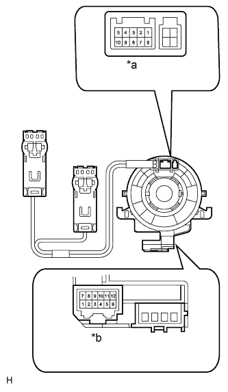

DTC B2660 Неисправность переключателя на рулевом колесе |
| Код DTC | Условие обнаружения DTC | Неисправный участок |
| B2660 | ЭБУ переключателя помощи при движении выявил неисправность в переключателе на рулевом колесе. |
|
| 1.СНИМИТЕ ПОКАЗАНИЯ ПОРТАТИВНОГО ДИАГНОСТИЧЕСКОГО ПРИБОРА |
Действуя в соответствии с указаниями на дисплее портативного диагностического прибора, выберите режим Data List (Нажмите здесь).
| Информация на дисплее прибора | Измеряемая величина / диапазон измерения | Нормальное состояние | Замечание по диагностике |
| Steering Wheel Menu Switch | Состояние переключателя MENU / OFF (ВЫКЛ) или ON (ВКЛ) | OFF (ВЫКЛ): переключатель MENU в выключенном положении | - |
| ON (ВКЛ): переключатель MENU во включенном положении | |||
| Steering Wheel Enter Switch | Состояние переключателя ENTER / OFF (ВЫКЛ) или ON (ВКЛ) | OFF (ВЫКЛ): переключатель ENTER в выключенном положении | - |
| ON (ВКЛ): переключатель ENTER во включенном положении | |||
| Steering Wheel Up Switch | Состояние переключателя UP/DOWN UP / OFF (ВЫКЛ) или ON (ВКЛ) | OFF (ВЫКЛ): переключатель UP/DOWN UP в выключенном положении | - |
| ON (ВКЛ): переключатель UP/DOWN UP во включенном положении | |||
| Steering Wheel Down Switch | Состояние переключателя UP/DOWN DOWN / OFF (ВЫКЛ) или ON (ВКЛ) | OFF (ВЫКЛ): переключатель UP/DOWN DOWN в выключенном положении | - |
| ON (ВКЛ): переключатель UP/DOWN DOWN во включенном положении |
|
| ||||
| OK | ||
| ||
| 2.ПРОВЕРЬТЕ ПЕРЕКЛЮЧАТЕЛИ НА РУЛЕВОМ КОЛЕСЕ |
Снимите переключатель на рулевом колеса в сборе (Нажмите здесь)
Измерьте сопротивление в соответствии со значениями, приведенными в таблице ниже.
| Контакты для подключения диагностического прибора | Условие | Заданные условия |
| z8-2 (DISP) - z8-3 (GND1) | Переключатель MENU нажат | Менее 2,5 Ом |
| Переключатель ENTER нажат | 313 - 346 Ом | |
| Переключатель UP/DOWN UP нажат | 3049 - 3370 Ом | |
| Переключатель UP/DOWN DOWN нажат | 959 - 1060 Ом | |
| Переключатели в выключенном положении | 95 - 105 кОм |
| *a | Вид спереди разъема со стороны жгута проводов (к витому кабелю в сборе) |
| *b | Переключатель MENU |
| *c | Переключатель ENTER |
| *d | Переключатель UP/DOWN UP |
| *e | Переключатель UP/DOWN DOWN |
|
| ||||
| OK | |
| 3.ПРОВЕРЬТЕ ЖГУТ ПРОВОДОВ И РАЗЪЕМ (ВИТОЙ КАБЕЛЬ – ЭБУ ПЕРЕКЛЮЧАТЕЛЯ ПОМОЩИ ПРИ ДВИЖЕНИИ) |
Отсоедините разъем G76 ЭБУ переключателя помощи при движении.
Отсоедините разъем G40 витого кабеля.
Измерьте сопротивление в соответствии со значениями, приведенными в таблице ниже.
| Контакты для подключения диагностического прибора | Условие | Заданные условия |
| G40-9 (DISP) - G76-3 (SWI1) | Всегда | Менее 1 Ом |
| G40-10 (GND1) - G76-4 (SWI2) | Всегда | Менее 1 Ом |
| G40-9 (DISP) - G40-2 (ECC) | Всегда | 10 кОм или более |
| G40-9 (DISP) - G40-4 (EAU) | Всегда | 10 кОм или более |
| G40-9 (DISP) -G40-10 (GND1) | Всегда | 10 кОм или более |
| G40-9 (DISP) - масса | Всегда | 10 кОм или более |
| G40-10 (GND1) - масса | Всегда | 10 кОм или более |
|
| ||||
| OK | |
| 4.ПРОВЕРЬТЕ ВИТОЙ КАБЕЛЬ В СБОРЕ |
|  |
Установите витой кабель в центральное положение (Нажмите здесь).
Измерьте сопротивление в соответствии со значениями, приведенными в таблице ниже.
| Контакты для подключения диагностического прибора | Условие | Заданные условия |
| A-2 - B-9 | Всегда | Менее 1 Ом |
| A-3 - B-10 | Всегда | Менее 1 Ом |
| A-2 - A-3 | Всегда | 10 кОм или более |
| A-2 - A-6 | Всегда | 10 кОм или более |
| A-2 - A-8 | Всегда | 10 кОм или более |
| A-2 - масса | Всегда | 10 кОм или более |
| A-3 - масса | Всегда | 10 кОм или более |
| *a | Разъем A |
| *b | Разъем B |
|
| ||||
| OK | ||
| ||